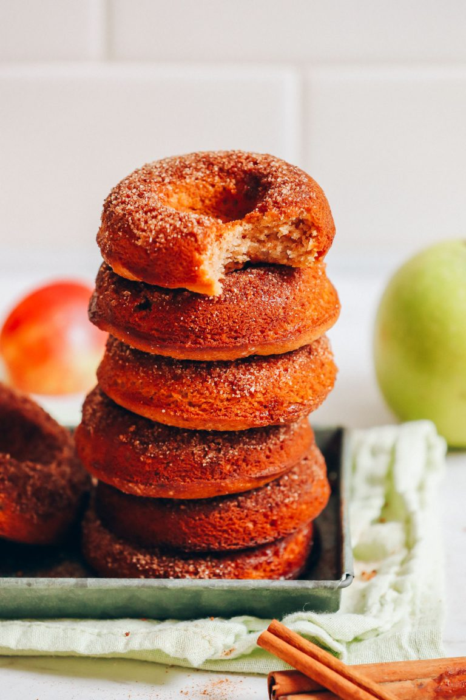

Vegan Gluten-Free Apple Cider Baked Donuts

Ingredients
- 1/4 C Aquafaba
- 1/4 C Avocado Oil
- 1/3 C Maple Syrup
- 1 tsp Pure Vanilla Extract
- 1/4 tsp Sea Salt
- 1 tsp Ground Cinnamon
- 1 Pinch Ground GInger
- 1 Pinch Ground Nutmeg
- 1/3 C Unsweetened Applesauce
- 1/2 C Apple Cider
- 1 1/2 C Almond Flour
- 1 C Gluten-Free Flour Blend, Heaping
- 2 tsp BAking Powder
- 1/2 tsp Baking Soda
Instructions
- Preheat oven to 375 degrees F (190 C) and grease two 6-slot (or one 12-slot) donut pans*.
- To a small mixing bowl, add aquafaba and use a mixer (or whisk) to vigorously blend until soft peaks form – about 1-2 minutes if using electric mixer. Set aside. (If yours doesn’t quite whip up into soft peaks, it’s OK. Just get them as fluffy as possible! A sprinkle of cream of tartar helps them firm up.)
- To a large mixing bowl, add the oil, cane (or coconut) sugar, maple syrup, vanilla extract, cinnamon, sea salt, ginger, and nutmeg and whisk vigorously to combine. Then add applesauce and apple cider and whisk once more to combine.
- Add almond flour, gluten-free flour, baking powder, and baking soda, and whisk gently to combine. Lastly, add in the whipped aquafaba and gently fold in, trying to be as gentle as possible.
- If the batter appears too thin at this point, add 1 Tbsp each almond flour or gluten-free flour at a time until it thickens up. It should appear like a thick cake batter – semi-thick and more scoopable than pourable.
- Divide batter evenly between donut tins, filling all the way full but leaving room for the center hole to be exposed (this can be done using a piping bag, Ziploc bag with the corner cut off, or just a spoon). There should be 11-12 donuts (amount as original recipe is written // adjust if altering batch size). Optional: Sprinkle the donut batter with coconut sugar and cinnamon before baking.
- Bake for about 20-22 minutes or until a toothpick inserted into the center comes out clean, the edges appear brown, and the tops appear dry and fluffy. Time will vary depending on oven and if you subbed ingredients.
- Remove donuts from oven and let cool for a few minutes in the pan. Then grab the tins with a towel and tap over a cooling rack to loosen the donuts until they fall out. Let cool (smooth side up – the side that was in the tin) for at least 5 minutes on the rack. The longer they cool, the more they’ll firm up!
- Optional: While cooling or once cooled completely, brush the donuts with a light coating of melted vegan butter (or coconut oil) and dip in or sprinkle with cinnamon-sugar coating.
- Best when fresh. Store completely cooled leftovers loosely covered at room temperature up to 3-4 days or in the freezer up to 1 month.